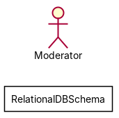
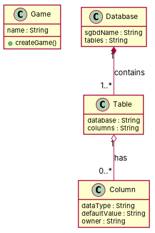

R1: A named element has a string that stores its name. R2: A Database has a String that stores its SGBD name. R3: A relational database schema can have a table. R4: A Column has a string to store its datatype and a string to store its default value. R5: A Database may contain any number of Tables. R6: A Table is associated with exactly one Database. R7: A table can have any number of columns as keys. R8: In a Relational Database Schema, a Column has exactly one Table as its owner.
Red, struck-through: removed by ambiguity removal; green: added.
| actors (1 → 1) |
|---|
| owner |
| classes (3 → 3) |
|---|
| Column |
| Database |
| Table |
| attributes (5 → 5) |
|---|
| Column.datatype |
| Column.default value |
| Column.owner |
| Database.sgbd name |
| Database.tables |
| relations (3 → 3) |
|---|
| association: Table -> Database |
| has: Column -> Table |
| has: Table -> Column |
| id | req | type | cue | status | readings / explanation |
|---|---|---|---|---|---|
| A1 | R1 | referential | its | resolved | stores the name of the element; stores the name of the SGBD The term 'its' is ambiguous between referring to the element's name or the SGBD's name. |
| A2 | R2 | referential | its | resolved | stores the name of the element; stores the name of the SGBD The term 'its' is ambiguous between referring to the element's name or the SGBD's name. |
| A3 | R4 | referential | its | open | stores the datatype and default value of the column; stores the datatype and default value of the column The term 'its' is redundant and does not introduce ambiguity. |
| A4 | R4 | referential | its | open | stores the datatype and default value of the column; stores the datatype and default value of the column The term 'its' is redundant and does not introduce ambiguity. |
| A5 | R5 | quantifier | any | resolved | may contain any number of tables; may contain a specific number of tables The term 'any' is ambiguous between allowing any number or a specific number of tables. |
| A6 | R7 | quantifier | any | resolved | can have any number of columns as keys; can have a specific number of columns as keys The term 'any' is ambiguous between allowing any number or a specific number of columns. |
| A7 | R8 | referential | its | resolved | has exactly one table as its owner; has exactly one column as its owner The term 'its' is ambiguous between referring to the column's or the table's owner. |


"""Code skeleton generated from the shared model of D2/RelationalDBSchema.
Every class and method records the requirement(s) it traces to."""
from __future__ import annotations
import dataclasses as _dc
import enum as _enum
import typing as _t
@_dc.dataclass
class Game:
"""Source: R1"""
name: _t.Optional[str] = None
def createGame(self) -> None:
"""Operation."""
raise NotImplementedError
@_dc.dataclass
class Database:
"""Source: -"""
sgbdName: _t.Optional[str] = None
tables: _t.Optional[str] = None
@_dc.dataclass
class Table:
"""Source: R3, R7, R8"""
database: _t.Optional[str] = None
columns: _t.Optional[str] = None
@_dc.dataclass
class Column:
"""Source: R4"""
dataType: _t.Optional[str] = None
defaultValue: _t.Optional[str] = None
owner: _t.Optional[str] = None
| python_compiles | True |
|---|---|
| java_compiles | True |
| attribute_mismatches | 0 |
| method_mismatches | 0 |
| use_cases | 0 |
| use_cases_without_actor | 0 |
| use_cases_without_method | 0 |
| actors_without_use_case | 1 |
| relations_to_unknown_class | 0 |
| inconsistencies | 1 |
| inconsistency_rate | 0.2 |
| requirement_coverage | 0.875 |
| validator fixes | |
| assumptions for open ambiguities | [{"tag": "R4", "assumption": "The 'owner' attribute in the 'Column' class is assumed to represent the 'Table' as the owner of the column, aligning with Requirement R8."}] |
| element | P | R | F1 | TP/FP/FN |
|---|---|---|---|---|
| classes | 0.5 | 0.5 | 0.5 | 2/2/2 |
| attributes | 0.25 | 0.4 | 0.308 | 2/6/3 |
| relations | 0.5 | 0.2 | 0.286 | 1/1/4 |
| relations_strict | 0.5 | 0.2 | 0.286 | 1/1/4 |